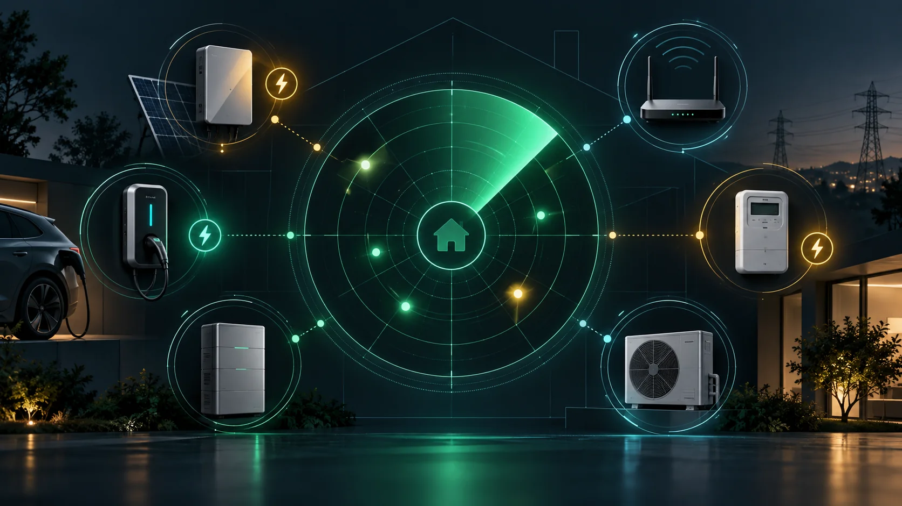

HiveScope ist der neue Netzwerkscanner für eHive One. Die App durchsucht das eigene lokale IPv4-Netz und stellt gefundene Geräte in einer klaren Übersicht dar. Das animierte Radar macht den Scan sichtbar: Jeder Treffer erscheint als eigener Radar-Punkt.
Vom unbekannten Gerät zur brauchbaren Übersicht
Zu jedem Fund sammelt HiveScope verfügbare Informationen wie IP-Adresse, Hostname, MAC-Adresse, Hersteller und erreichbare Standarddienste. Geräte lassen sich als Raster oder Liste anzeigen, durchsuchen und gezielt auswählen. Der letzte Scan bleibt im Browser gespeichert und ist deshalb auch nach einem Neuladen der Seite noch vorhanden.
Ports gezielt prüfen
Mit der integrierten Portprüfung kann HiveScope untersuchen, ob ein bestimmter TCP-Port auf einem Gerät erreichbar ist. Das hilft beispielsweise bei der Suche nach Webdiensten oder Modbus TCP auf Port 502. Die Prüfung zeigt zunächst die Erreichbarkeit eines Dienstes – nicht automatisch dessen Konfiguration oder vollständige Geräteidentität.
Mögliche evcc-Geräte schneller erkennen
Ein grüner evcc-Blitz markiert Geräte, deren Hersteller, Name oder erreichbare Dienste zu einem bekannten evcc-Gerätetyp passen könnten. Erkennt HiveScope einen möglichen Kandidaten, steht das vermutete Template direkt am Treffer – beispielsweise bei passenden Systemen von Huawei oder Solis. Mit dem Blitz-Filter bleiben nur diese Kandidaten in der Ansicht.
Diese Erkennung ist bewusst eine Vorauswahl: Ein Treffer bedeutet, dass die technischen Hinweise zu einem evcc-Template passen könnten. Ob Modell, Firmware, Schnittstelle und Zugangsdaten tatsächlich kompatibel sind, zeigt erst die anschließende Einrichtung.
Für Diagnose und Einrichtung gebaut
- Lokaler Netzwerkscan mit animierter Radaransicht
- Raster- und Listenansicht mit Suche und Auswahlfilter
- Hostname-, MAC- und Herstellererkennung
- Anzeige erreichbarer Standardports und gezielte TCP-Portprüfung
- EVCC-Kandidaten mit Blitz, möglichem Template und eigenem Filter
- Detailansicht und dauerhaft gespeicherter letzter Scan
HiveScope läuft direkt auf eHive One und fügt sich als eigene App in den SmartHub ein. Das Projekt und die Installationspakete stehen offen auf GitHub bereit.